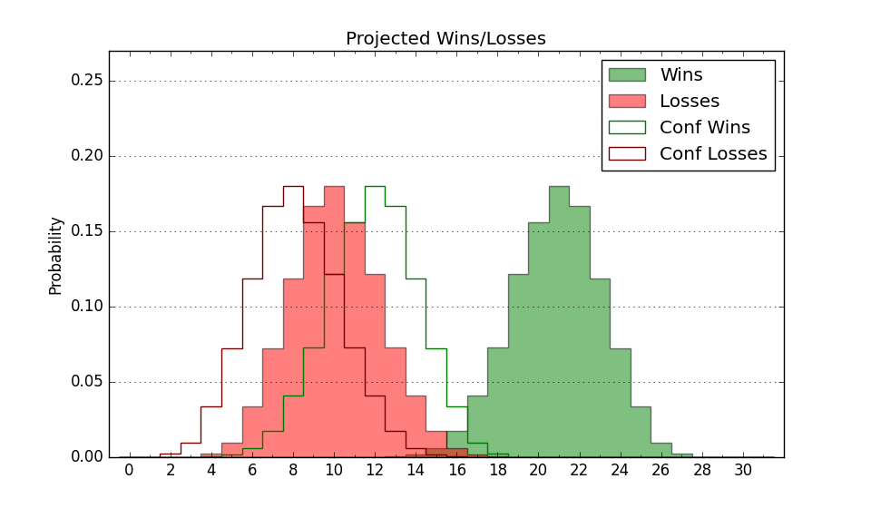

| Home | Game Probabilities | Conferences | Preseason Predictions | Odds Charts | NCAA Tournament |
| City: | Lawrence, Kansas | |
| Conference: | Big 12 (9th)
| |
| Record: | 0-1 (Conf) 9-3 (Overall) | |
| Ratings: | Comp.: 26.2 (16th) Net: 25.0 (22nd) Off: 116.4 (39th) Def: 91.4 (16th) SoR: 73.0 (32nd) |
| Remaining | ||||||
|---|---|---|---|---|---|---|
| Date | Opponent | Win Prob | Pred. | |||
| 1/5 | @ UCF (78) | 70.1% | W 77-71 | |||
| 1/8 | Arizona St. (59) | 84.5% | W 77-65 | |||
| 1/11 | @ Cincinnati (19) | 37.7% | L 66-70 | |||
| 1/15 | @ Iowa St. (8) | 27.8% | L 71-78 | |||
| 1/18 | Kansas St. (100) | 92.0% | W 82-65 | |||
| 1/22 | @ TCU (62) | 64.2% | W 72-68 | |||
| 1/25 | Houston (4) | 43.5% | L 63-65 | |||
| 1/28 | UCF (78) | 88.9% | W 81-66 | |||
| 2/1 | @ Baylor (9) | 29.6% | L 72-79 | |||
| 2/3 | Iowa St. (8) | 56.7% | W 76-74 | |||
| 2/8 | @ Kansas St. (100) | 77.2% | W 78-69 | |||
| 2/11 | Colorado (86) | 90.1% | W 79-63 | |||
| 2/15 | @ Utah (67) | 66.7% | W 78-73 | |||
| 2/18 | @ BYU (34) | 48.1% | L 74-75 | |||
| 2/22 | Oklahoma St. (114) | 93.7% | W 84-64 | |||
| 2/24 | @ Colorado (86) | 72.7% | W 74-67 | |||
| 3/1 | Texas Tech (22) | 69.0% | W 77-72 | |||
| 3/3 | @ Houston (4) | 18.4% | L 59-69 | |||
| 3/8 | Arizona (13) | 60.9% | W 79-75 | |||
| Previous | Game Score | |||||
| Date | Opponent | Win Prob | Result | Off | Def | Net |
| 11/4 | Howard (293) | 98.8% | W 87-57 | -5.4 | 5.9 | 0.5 |
| 11/8 | North Carolina (31) | 73.5% | W 92-89 | 4.0 | -13.3 | -9.2 |
| 11/12 | (N) Michigan St. (21) | 54.2% | W 77-69 | -6.7 | 13.5 | 6.7 |
| 11/16 | Oakland (203) | 97.4% | W 78-57 | 1.9 | -6.1 | -4.1 |
| 11/19 | UNC Wilmington (161) | 96.2% | W 84-66 | -9.1 | -4.9 | -14.0 |
| 11/26 | (N) Duke (3) | 26.6% | W 75-72 | 9.1 | 3.5 | 12.5 |
| 11/30 | Furman (96) | 91.4% | W 86-51 | 14.9 | 13.4 | 28.3 |
| 12/4 | @Creighton (51) | 56.2% | L 63-76 | -13.6 | -7.7 | -21.3 |
| 12/8 | @Missouri (48) | 54.9% | L 67-76 | -17.4 | -1.5 | -18.8 |
| 12/14 | North Carolina St. (91) | 91.0% | W 75-60 | 8.7 | -1.1 | 7.6 |
| 12/22 | Brown (180) | 96.9% | W 87-53 | 5.6 | 9.6 | 15.1 |
| 12/31 | West Virginia (41) | 77.4% | L 61-62 | -5.3 | -4.7 | -10.1 |
| Stats & Trends | |||||
|---|---|---|---|---|---|
| Current | Day | Week | Month | Season | |
| Composite | 26.2 | +0.2 | -1.0 | -3.9 | -4.8 |
| Comp Rank | 16 | +1 | -2 | -8 | -11 |
| Net Efficiency | 25.0 | +0.2 | -1.1 | -4.5 | -- |
| Net Rank | 22 | -- | -1 | -9 | -- |
| Off Efficiency | 116.4 | +0.1 | -0.5 | -5.7 | -- |
| Off Rank | 39 | +3 | -- | -24 | -- |
| Def Efficiency | 91.4 | +0.1 | -0.6 | +1.2 | -- |
| Def Rank | 16 | -- | -2 | +18 | -- |
| SoS Rank | 25 | +1 | +6 | +53 | -- |
| Exp. Wins | 20.9 | +0.1 | -1.1 | -3.6 | -2.0 |
| Exp. Conf Wins | 11.9 | +0.1 | -1.1 | -2.4 | -2.2 |
| Conf Champ Prob | 5.2 | +0.6 | -4.7 | -20.8 | -17.8 |

| Advanced Stats | ||
|---|---|---|
| Stat | Value | Rank |
| Off Eff FG % | 0.594 | 10 |
| Off Ast Ratio | 0.213 | 1 |
| Off ORB% | 0.270 | 224 |
| Off TO Rate | 0.130 | 60 |
| Off FT Ratio | 0.253 | 340 |
| Def Eff FG % | 0.429 | 13 |
| Def Ast Ratio | 0.119 | 40 |
| Def ORB% | 0.221 | 9 |
| Def TO Rate | 0.151 | 167 |
| Def FT Ratio | 0.280 | 79 |